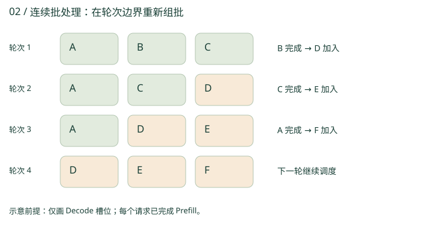

2.1 从一张订单，到一批订单
一家餐厅如果每次只炒一小份菜，准备和搬运的成本会很高。GPU 处理单请求 Decode 时也可能“吃不饱”：每步只有一个新位置，却需要读取大量权重。把多个请求的新位置合并到一个计算批次，可以提高权重复用与运算规模。
Batch Size 是批次中的序列数，Token 数则取决于各序列本轮被调度多少位置。单序列线性层可近似看成 GEMV（矩阵乘向量）；合批后更接近 GEMM（矩阵乘矩阵）。收益会随资源饱和而递减，Batch 不是越大越好。
2.2 Static 与 Continuous Batching
| 方式 | 成员变化 | 主要取舍 |
|---|---|---|
| Static Batching | 通常一批请求一起开始，成员固定 | 简单，但短请求结束后的槽位可能闲置；Padding 是否存在取决于实现 |
| Continuous Batching | 在迭代边界移除完成请求、接纳新请求 | 更充分利用容量，需要细粒度调度与缓存管理 |

看一轮，换一批
简化示例只显示 Decode 槽位；假设这些请求已完成 Prefill。真实接入必须同时满足 Prefill 与缓存条件。
2.3 Scheduler：每轮真正决定什么？
Scheduler 像餐厅的调度台：把 Waiting Queue 中的请求接入，把 Running 中的请求安排到这一轮，移除 Finished，并与 Block Manager 协商 KV 空间。CPU 常参与调度，GPU 执行被组好的模型计算。
- 选请求：结合到达顺序、优先级与公平策略，决定谁等待、谁运行。
- 分配本轮 Token 预算：给 Decode 的新位置与 Prefill 的输入位置分配计算名额。
- 检查 KV 容量：确认本轮追加数据需要的物理块是否可用。
- 执行并更新：运行模型、采样、发送输出，更新状态，释放或保留缓存。
max_num_seqs
限制本轮可调度的序列数。
max_num_batched_tokens
限制本轮新处理的 Token 总数。
限制已缓存历史和本轮追加的总存储占用。
参数语义应以所用引擎版本为准。特别要区分：本轮 1 个 Decode Token，背后可能要读取 10,000 个缓存位置；计算预算和驻留 KV 容量不是同一个数字。
2.4 Chunked Prefill：长订单分批处理
长 Prompt 的 Prefill 若独占一次很长的执行，会拉长正在输出的请求的 ITL。Chunked Prefill 把长输入拆成多轮片段，在预算内与 Decode 混合；后续片段仍能注意到先前片段的 KV，所以这不是截断上下文。
例：本轮预算 512，安排 32 个常规 Decode 请求各处理 1 个新位置，则最多还可分配 480 个 Prefill 位置。一个 2,000 Token 输入在同样余量下至少需要 5 轮；其全部输入处理完成后，才可得到首个输出。
2.5 并发、吞吐、时延，各自数什么？
- Concurrency / 并发数
- 某个边界内未完成的请求数，必须说明是否包含排队请求；不等于 GPU 本轮 Batch Size。
- RPS / QPS
- 每秒完成的请求数；压测也会报告发送速率，需区分到达与完成。
- TPS
- 每秒处理的 Token 数；要说明是输入、输出还是两者合计。输出吞吐不能直接和总吞吐相比。
- TTFT / TPOT / ITL
- 首 Token 时间 / 首个输出之后的平均 Token 间隔 / 逐对 Token 到达间隔。
Little 定律要求长期稳定的系统、同一统计边界与一致的统计窗口。例如稳定完成 10 请求/秒，平均请求在系统中停留 4 秒，则平均在途约 40 个（若停留时间含排队，在途数也要含排队）。它不是单凭“并发 40”反推 GPU 数量的公式。
较大的 Batch 可以提高系统吞吐，但也可能拉长单轮执行时间；高负载还会增加排队。报告性能应同时给出输入/输出长度分布、并发或到达率、P50/P95/P99 时延与硬件配置。
复习卡片
Batching 决定一起算谁，Scheduler 决定每轮怎么排，KV 容量决定能接住多少历史。
1,000 个在线请求等于 Batch Size 1,000 吗？
不等于。请求可能排队、执行 Prefill 或等待资源；每轮实际调度的序列数通常更少。
Continuous Batching 能让同一请求的多个输出随意并行吗？
不能。常规自回归 Decode 仍有序列依赖；连续批处理主要利用请求之间的并行。
Token Budget 512 是否意味着最多缓存 512 个 Token？
不是。它限制一轮新处理的位置数，历史 KV 的驻留规模受独立的缓存容量约束。
术语速查
- Padding
- 用填充位置对齐不同长度的序列；现代变长执行可减少此类浪费。
- Straggler / 慢尾请求
- 固定批次中较晚完成、拖长批次占用的请求。
- Iteration-level Scheduling
- 在模型执行轮次之间重新选择请求和工作量。
- Admission Control
- 依据资源与服务目标决定是否接纳请求。
- Preemption / 抢占
- 暂时移出运行请求以腾出资源，随后可能需要恢复或重算。